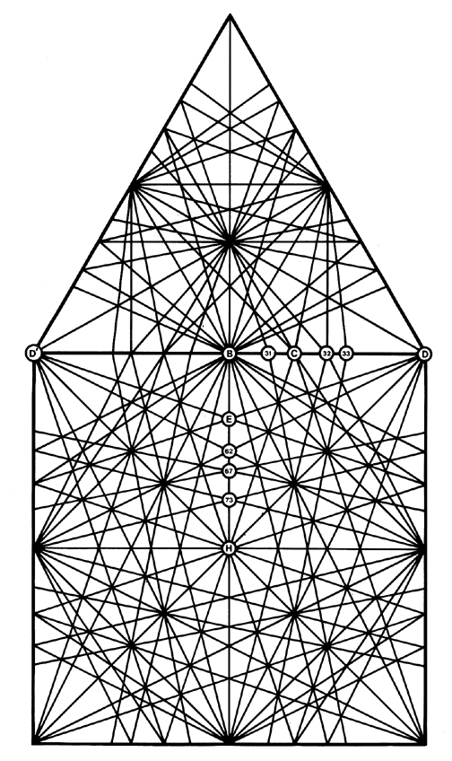

Fig. 987.412 Rational Fraction Edge Increments of 60-degree Great-circle Subdividings of Vector Equilibrium: When these secondary VE great-circle sets are projected upon the planar VE they reveal the following rational fraction edge increments:
D' - D = 1 VE edge
D' - D = 1 VE radius
(B - 31) / (D' - D) = 1/10
(B - D) / (D' - D) = 1/2
(B - 73) / (D' - D) = 3/8
(B - C) / (D' - D) = 1/6
(B - E) / (D' - D) = 1/6
(B - H) / (D' - D) = 1/2
(B - 32) / (D' - D) = 1/4
(B - 62) / (D' - D) = 1/4
(B - 33) / (D' - D) = 3/10
(B - 67) / (D' - D) = 3/10
Copyright © 1997 Estate of R. Buckminster Fuller